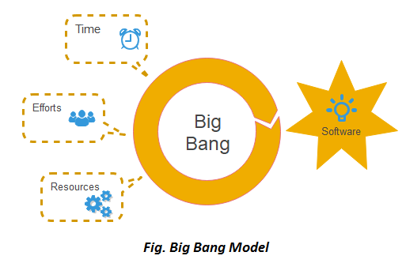

Selles mudelis ei järgita arendajad ühtegi konkreetset protsessi. Arendamine algab vajalike vahendite ja pingutustega sisenditena. Ja tulemus võib või ei pruugi vastata kliendi nõuetele, sest selles mudelis ei ole isegi kliendi nõudeid määratletud. See mudel sobib ideaalselt väikestele projektidele nagu akadeemilised projektid või praktilised projektid. Üks või kaks arendajat saavad selle mudeli järgi koostööd teha.
Big Bang Model'i kasutatakse peamiselt järgmistel juhtudel:
Big Bang mudeli eelised (Plussid):
Big Bang mudeli puudused (Miinused)